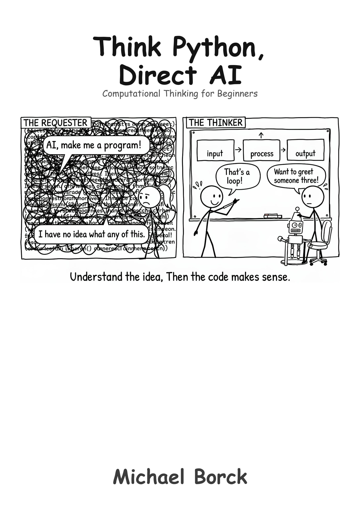

A revolutionary approach to learning Python by partnering with AI to build mental models, understand concepts, and architect solutions.
Author
Michael Borck
Published
April 2, 2026
Preface

Why This Book Exists
Most programming books teach you syntax. This one teaches you to think.
That distinction matters more now than it ever has. AI can generate code in seconds. If your only skill is writing code, you are competing with something faster and cheaper. But if you can decompose a problem, design a solution, and evaluate whether an implementation is correct — you have the skill that makes AI useful rather than dangerous.
This book grew out of years of teaching programming across multiple languages — C, C++, C#, Python — and noticing that the students who struggled were rarely struggling with syntax. They were struggling with the thinking that comes before syntax: breaking a problem into parts, recognising patterns, understanding what a program is actually doing. The concepts are the same regardless of the language. Python is simply the vehicle we use to express them.
Who This Book Is For
You are a complete beginner. You have never written a program, or you have tried and it did not stick. You may be a student in a programming course, a professional looking to add a skill, or someone who is simply curious about how software works.
You do not need a mathematics background. You do not need prior experience with any programming language. You need willingness to think carefully about problems before reaching for solutions.
What This Book Is Not
This is not a Python reference manual. It does not cover every feature of the language. It covers the concepts you need to think like a programmer, using Python to make those concepts concrete.
It is not a prompt engineering guide. You will use AI as an exploration tool throughout, but the book argues that understanding must come before code generation. If you are looking for ways to get AI to write your programs for you, this is the wrong book.
It is not the only Python book you will ever need. It is the first one. It gives you the mental models that make every subsequent book, course, or tutorial more effective. When you are ready for focused fundamentals, move to Code Python, Consult AI. When you are ready for professional practices, move to Ship Python, Orchestrate AI. The series is designed so each book builds on the one before.
And it is not a book that avoids AI or treats it as cheating. AI is your learning partner here. The book teaches you to use it as an exploration tool — to ask questions, test hypotheses, and discover patterns — not as a shortcut around understanding.
If You Are Feeling Uncertain
You are not behind. Programming is genuinely hard to learn, and the people who make it look easy have simply been doing it longer. AI tools have added a new layer of confusion: it looks like the machine can already do everything, so why bother learning? The answer is that the machine cannot think about problems. You can. This book develops that ability.
How This Book Is Structured
The book progresses from understanding basic computational concepts to architecting systems:
Part I (Computational Thinking): Input/output, storage, decisions, patterns. You learn to think about problems before you write a single line of code.
Part II (Building Systems): Functions, data structures, file handling, integration. You learn to build programs from smaller, reusable pieces.
Part III (Real-World Programming): Data processing, APIs, interaction, architecture. You learn to build programs that do useful things in the real world.
Each chapter follows a consistent pattern: concept first, then AI-guided exploration, then code. You understand the idea before you see the syntax.
Conventions Used in This Book
Throughout the book, AI exploration prompts appear as grey monospace blocks — these are things you type into your AI tool:
Show me 5 examples of input→process→output
in everyday life
Code examples appear with syntax highlighting:
name =input("What is your name? ")print(f"Hello, {name}!")
You will also encounter coloured callout boxes. Each serves a different purpose.
TipPractical advice
Green boxes offer tips you can apply immediately — things to try, exploration suggestions.
NoteKey concept
Blue boxes highlight important ideas worth pausing on — mental models, patterns, principles.
WarningWatch out
Yellow boxes flag common mistakes or misconceptions that trip up beginners.
ImportantCritical point
Red boxes mark things that are essential to understand before moving on.
How This Book Was Written
This book was written through human-AI collaboration, using the same approach it teaches. The conceptual frameworks, pedagogical structure, and learning objectives were designed by the author. Claude (Anthropic) assisted with drafting, refining, and iterating. Every chapter was reviewed for accuracy and pedagogical effectiveness. The process demonstrates the book’s core message: AI enhances human thinking when used with intention and oversight.
Ways to Engage with This Book
This book is available in several formats. Pick whichever fits how you work and learn.
Read it online. The full book is freely available at the companion website, with dark mode, search, and navigation.
Read it on paper or e-reader. Available as a paperback and ebook through Amazon KDP.
Converse with it. The online edition includes a chatbot grounded in the book’s content.
Feed it to your own AI. The llm.txt file provides a clean text version of the entire book, ready to paste into ChatGPT, Claude, or any AI tool.
Run the code. All project code is available as Python scripts and Jupyter notebooks in the code/ folder on GitHub. Each notebook includes an “Open in Colab” button — click it to run the code directly in Google Colab with no installation required. Colab also includes Google Gemini, so you can practice coding with AI right in the notebook. DeepWiki provides an AI-navigable view of the repository.
Browse all books. This book is part of a series. See all titles at books.borck.education.
The online version is always the most current.
Source Code & Feedback
All code examples and project files are available at: https://github.com/michael-borck/think-python-direct-ai
Found an error? Have a suggestion?
Open an issue: https://github.com/michael-borck/think-python-direct-ai/issues
Email: michael@borck.me
The Series
This book is part of a series designed to help you master modern software development in the AI era.
# Preface {.unnumbered}## Why This Book ExistsMost programming books teach you syntax. This one teaches you to think.That distinction matters more now than it ever has. AI can generate code in seconds. If your only skill is writing code, you are competing with something faster and cheaper. But if you can decompose a problem, design a solution, and evaluate whether an implementation is correct — you have the skill that makes AI useful rather than dangerous.This book grew out of years of teaching programming across multiple languages — C, C++, C#, Python — and noticing that the students who struggled were rarely struggling with syntax. They were struggling with the thinking that comes before syntax: breaking a problem into parts, recognising patterns, understanding what a program is actually doing. The concepts are the same regardless of the language. Python is simply the vehicle we use to express them.## Who This Book Is ForYou are a complete beginner. You have never written a program, or you have tried and it did not stick. You may be a student in a programming course, a professional looking to add a skill, or someone who is simply curious about how software works.You do not need a mathematics background. You do not need prior experience with any programming language. You need willingness to think carefully about problems before reaching for solutions.## What This Book Is NotThis is not a Python reference manual. It does not cover every feature of the language. It covers the concepts you need to think like a programmer, using Python to make those concepts concrete.It is not a prompt engineering guide. You will use AI as an exploration tool throughout, but the book argues that understanding must come before code generation. If you are looking for ways to get AI to write your programs for you, this is the wrong book.It is not the only Python book you will ever need. It is the first one. It gives you the mental models that make every subsequent book, course, or tutorial more effective. When you are ready for focused fundamentals, move to *Code Python, Consult AI*. When you are ready for professional practices, move to *Ship Python, Orchestrate AI*. The series is designed so each book builds on the one before.And it is not a book that avoids AI or treats it as cheating. AI is your learning partner here. The book teaches you to use it as an exploration tool — to ask questions, test hypotheses, and discover patterns — not as a shortcut around understanding.## If You Are Feeling UncertainYou are not behind. Programming is genuinely hard to learn, and the people who make it look easy have simply been doing it longer. AI tools have added a new layer of confusion: it looks like the machine can already do everything, so why bother learning? The answer is that the machine cannot think about problems. You can. This book develops that ability.## How This Book Is StructuredThe book progresses from understanding basic computational concepts to architecting systems:**Part I** (Computational Thinking): Input/output, storage, decisions, patterns. You learn to think about problems before you write a single line of code.**Part II** (Building Systems): Functions, data structures, file handling, integration. You learn to build programs from smaller, reusable pieces.**Part III** (Real-World Programming): Data processing, APIs, interaction, architecture. You learn to build programs that do useful things in the real world.Each chapter follows a consistent pattern: concept first, then AI-guided exploration, then code. You understand the idea before you see the syntax.## Conventions Used in This BookThroughout the book, AI exploration prompts appear as grey monospace blocks — these are things you type into your AI tool:```textShow me 5 examples of input→process→outputin everyday life```Code examples appear with syntax highlighting:```pythonname =input("What is your name? ")print(f"Hello, {name}!")```You will also encounter coloured callout boxes. Each serves a different purpose.::: {.callout-tip title="Practical advice"}**Green boxes** offer tips you can apply immediately — things to try, exploration suggestions.:::::: {.callout-note title="Key concept"}**Blue boxes** highlight important ideas worth pausing on — mental models, patterns, principles.:::::: {.callout-warning title="Watch out"}**Yellow boxes** flag common mistakes or misconceptions that trip up beginners.:::::: {.callout-important title="Critical point"}**Red boxes** mark things that are essential to understand before moving on.:::## How This Book Was WrittenThis book was written through human-AI collaboration, using the same approach it teaches. The conceptual frameworks, pedagogical structure, and learning objectives were designed by the author. Claude (Anthropic) assisted with drafting, refining, and iterating. Every chapter was reviewed for accuracy and pedagogical effectiveness. The process demonstrates the book's core message: AI enhances human thinking when used with intention and oversight.## Ways to Engage with This BookThis book is available in several formats. Pick whichever fits how you work and learn.- **Read it online.** The full book is freely available at the companion website, with dark mode, search, and navigation.- **Read it on paper or e-reader.** Available as a paperback and ebook through Amazon KDP.- **Converse with it.** The online edition includes a chatbot grounded in the book's content.- **Feed it to your own AI.** The `llm.txt` file provides a clean text version of the entire book, ready to paste into ChatGPT, Claude, or any AI tool.- **Run the code.** All project code is available as Python scripts and Jupyter notebooks in the `code/` folder on [GitHub](https://github.com/michael-borck/think-python-direct-ai). Each notebook includes an "Open in Colab" button — click it to run the code directly in Google Colab with no installation required. Colab also includes Google Gemini, so you can practice coding with AI right in the notebook. [DeepWiki](https://deepwiki.com/michael-borck/think-python-direct-ai) provides an AI-navigable view of the repository.- **Browse all books.** This book is part of a series. See all titles at [books.borck.education](https://books.borck.education).The online version is always the most current.### Source Code & FeedbackAll code examples and project files are available at:https://github.com/michael-borck/think-python-direct-aiFound an error? Have a suggestion?- Open an issue: https://github.com/michael-borck/think-python-direct-ai/issues- Email: michael@borck.me## The SeriesThis book is part of a series designed to help you master modern software development in the AI era.```{mermaid}%%| fig-width: 4flowchart TD CND["Conversation,<br/>Not Delegation"] CPPA["Converse Python,<br/>Partner AI"] Think["Think Python,<br/>Direct AI"] Code["Code Python,<br/>Consult AI"] Ship["Ship Python,<br/>Orchestrate AI"] Web["Build Web,<br/>Guide AI"] CND --> CPPA CND --> Web CPPA --> Think Think --> Code Code --> Ship```**Conversation, Not Delegation** — the general methodology for working with AI across any discipline.**Converse Python, Partner AI** — intentional prompting methodology applied to software development.**Think Python, Direct AI** (this book) — computational thinking for absolute beginners.**Code Python, Consult AI** — focused Python fundamentals with AI integration.**Ship Python, Orchestrate AI** — professional Python development practices and tooling.**Build Web, Guide AI** — web development with AI as your development partner.All titles are available at [books.borck.education](https://books.borck.education).